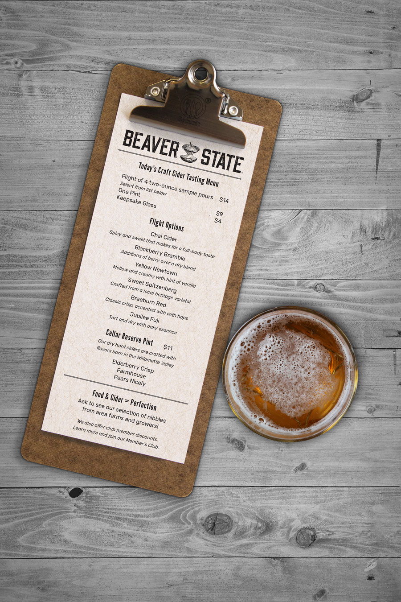

Beaver State Cider Company
Illustrator, InDesign, Photoshop
This fictitious business is an outgrowth of an original branding illustration from my Adobe Illustrator class. I began with a line drawing and converted it to a vector graphic, while preserving the intended rustic, wood cut quality.
To pay homage to my Oregon roots, this is branded after the state nickname. I imagined this company is owned by two families who bought heritage orchards together for preservation and ecology purposes. Previously limited to wholesale relationships, Beaver State is opening its first tasting room after successfully generating a regional following. To distinguish itself from the dozens of wine tasting rooms of the Willamette Valley region, Beaver State caters to customers wanting the social experience of a pub, but with more dietary options like farm-to-table ingredients and grain-free alcohol.
Sketches and Early Renderings
Branding Style
The main logo is an apple gnawed to the core in the style of how beavers gnaw tree trunks. The connection to old-growth apple orchards and beaver activity in the area inspires the use of wood texture throughout the project. The brand word mark is done in wood-style lettering, which is reinforced by wood texture overlays for business collateral and packaging.
Letterhead and Business Card
Tasting Room Exterior Sign
A circular container is applied to the logo to express a pub-like quality of the tasting room.
Tasting Room Menu and Coaster
The menu is designed to be easily printed from an office printer on standard paper with black ink to accomodate inventory changes on a daily basis. The coaster is made from cork.
Interior Poster
Bottle Labels
Bottle Carrier Packaging
This is a 2-bottle cardstock carrier made from 30% post consumer recycled fiber. After the bottles are inserted, hand flaps are secured and a paper belt slides over the top and rests between side notches. The lack of adhesive renders it more compostable than glued bags, an important value to the owners.